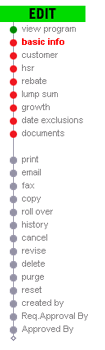
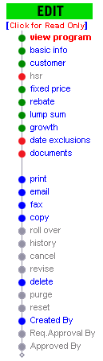
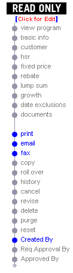

Blacksmith Applications, www.blacksmithapps.com
Home > Programs scorecard > (click program link)
The images below show the edit options for a program.
For a program that is partially or fully entered, the pages that have been entered display in blue text (rather than red or gray), and the circle icons are green if the entry is complete, or red if the entry is partial.
You cannot display a page that has gray text and a gray circle icon next to it.
You can display a page that has blue text (whether the circle icon is red or green).
A brand new program |
A program with data entered |
A program in read-only mode |
|
 |
 |
 |